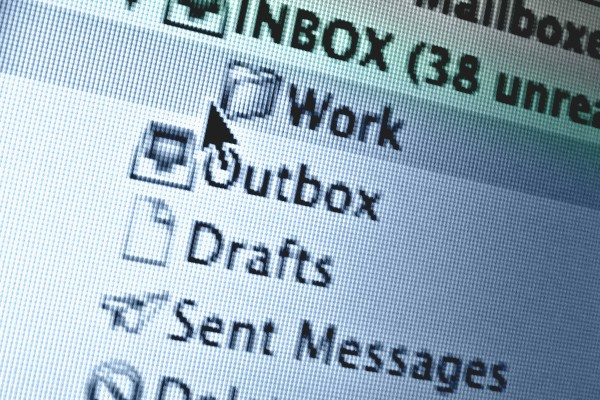
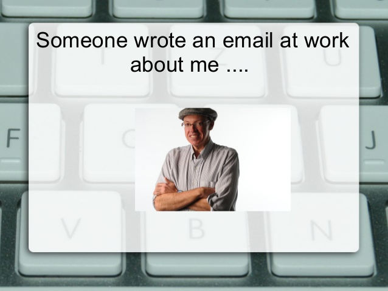
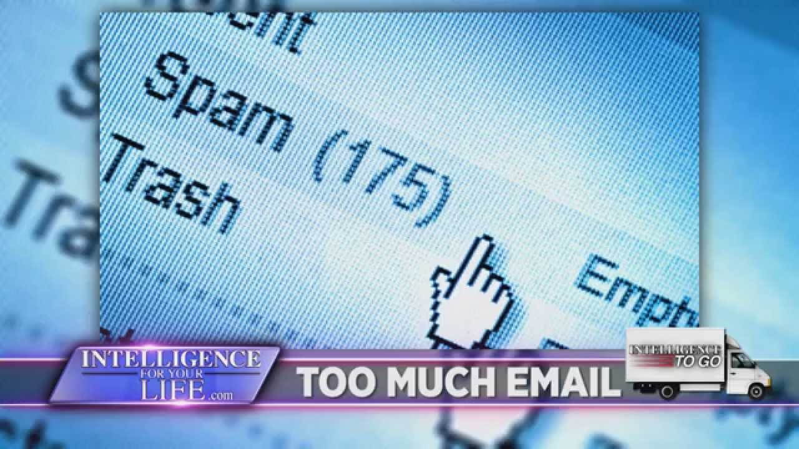

7 Best Email Apps For Your iPhone
- Now that Mailbox is gone, here are the best email apps for your iPhone.
- 1. Microsoft's Outlook for iOS (acquired by Acompli).

Microsoft's Outlook for iOS (acquired by Acompli) is simply the most powerful email client available for your iPhone
now that Dropbox's Mailbox for iOS, acquired by Mailbox, the former heavyweight champion email client on your iPhone, is being discontinued
by Dropbox. It supports multiple accounts. It leverages quick tap and swipe features to place the power in your fingers.
Services are integrated with numbingness. It honestly feels like a next generation app even though by definition we
exist in the present, the current generation. It will force dogged competition in this realm of apps, to be sure. All
files are so easily seen. If you want full control over your inbox and the services that surround it, Microsoft's Outlook
for iOS (acquired by Acompli) is your only choice. It does all of the hard work for you. Split time between "Focused" and
"Other." Give it a try.
- 2. Google's Gmail for iOS (developed in-house at Google).
Google's Gmail for iOS (developed in-house at Google) is a wonderful secondary option for an email client on your iPhone,
but only if you have a Gmail account by Google. If you do not have a Gmail account by Google, Google's Gmail for iOS
(developed in-house at Google) will not be a good option for an email client on your iPhone. Google is a good big company
and you can trust it for that reason. The app utilizes Google's
legendary and well-heralded Material Design language and is very easy to understand visually, in part because of its
inherent understanding of lighting, elevation, and shadows that mimics the natural world. It supports multiple accounts.
I can't help but shake the feeling, though, that everything is taking just one-too-many taps; don't get me started on
the inability to swipe, in 2015. Though at times Google's Gmail for iOS (developed in-house at Google) feels sluggish
compared to other more powerful apps like Microsoft's Outlook for iOS (acquired by Acompli), and it hasn't yet integrated
the unified inbox design found on Android's Native Gmail app, I still think it is a good app.
- 3. MY.COM MYMAIL for iOS.

MY.COM MYMAIL for iOS is cute but ultimately flawed beyond repair. MY.COM MYMAIL for iOS is not a trustworthy app. It
does not support multiple accounts. Moreover, it is not made by a good big company but by a small bad company. How can
you trust that it won't be discontinued like Dropbox's Mailbox for iOS (acquired by Mailbox)? It owes you nothing and
simply cannot be trusted. It loads quickly enough but there always seems to be some sort of extra tap, especially compared
to Microsoft's Outlook for iOS (acquired by Acompli). No swiping with your fingers. Do not download MY.COM MYMAIL for iOS
unless you do not care about power.
- 4. Google's Inbox for iOS (developed in-house at Google).
Google's Inbox for iOS (developed in-house at Google) might seem good and futuristic, but for the present, in which we are
eternally and hopelessly bound, it is just too obtuse for the average user, let alone the average power-user. There are many
opportunities to swipe in Google's Inbox for iOS (developed in-house at Google), and the taps feel ok enough, but it just
doesn't feel powerful, okay? I will commend it for its use of Google's well-known Material Design language.
Google's Inbox for iOS (developed in-house at Google) does not support multiple accounts. Unlike most other email client
apps for your iPhone, it does allow you to create to-do lists. Check Google's Inbox for iOS (developed in-house at Google)
out if you are interested in the future, even as you acknowledge your inability to escape from the now.
- 5. TASKBOXER BOXER LITE for iOS.

TASKBOXER BOXER LITE for iOS packs a punch but do not use this bad app. It is capable and integrates with external
services like Instagram and Evernote but do not download or open this app. It is a bad app with perfectly optimized taps
and swipes and it costs money and you will be happy with another app like Microsoft's Outlook for iOS acquired by Acompli.
It supports multiple accounts.
- 6. Cloudmagic Email for iOS.
Cloudmagic Email for iOS app is so simple it makes Dropbox's Mailbox for iOS (acquired by Mailbox) look cluttered, and that’s
saying something. Its incredibly subtle design admittedly helps dull the pain of sorting through hundreds of thousands of emails,
but compared to all the other apps there’s just not as many powerful features. It does not support multiple accounts.
- 7. Apple Mail for iOS (developed in-house at Apple).
Apple Mail for iOS (developed in-house at Apple) doesn't offer much. It is native. You can do better than this.
You are better than this. Don't wait around for it to change. Apple Mail for iOS (developed in-house at Apple) will not
change. You will not change. Apple updates these things at a glacial pace. You update at a glacial pace. All you get is
email, not a single extra feature. You have nothing to offer. Apple Mail for iOS (developed in-house at Apple) does
support multiple accounts.
- Return to Listicle Website.